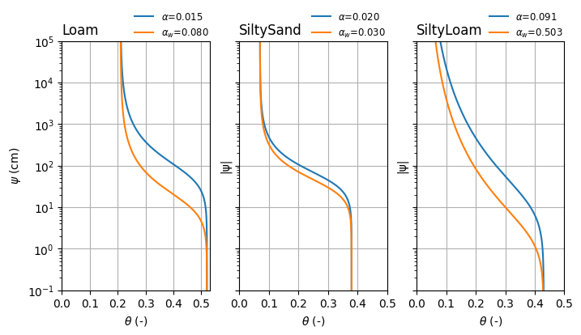

Hysteresis Model¶
Packages¶
[1]:
import matplotlib.pyplot as plt
import pedon as pe
Implementation¶
There is only one hysteresis model available in pedon which is based on the work of Kool and Parker (1987). This model is implemented in the Kool class. The parameters for this model are the same as for the Genuchten model, but with an additional parameter \(\xi\) which controls the degree of hysteresis by multiplying the (dry) air-entry pressure \(\alpha\). The ‘ink-bottle-effect’ (pores empty at larger suction than filling up) leads to a shift of the primary wetting curve
compared with the primary drying curve. The van Genuchten shape parameters n and m remain similar for both, drying and wetting (Bashir et al., 2015). Also, no air entrapment is assumed - values for the residual and saturated water contents remain similar (Kool & Parker, 1987; Bashir et al., 2015). The following table from Bashir et al. (2015) shows the parameters for the three soil types used in this example.
SoilParameter |
Loam |
SiltySand |
SiltyLoam |
|---|---|---|---|
Ks (cm/day) |
1.915 |
25.92 |
137.3 |
theta_r |
0.21 |
0.07 |
0.03 |
theta_s |
0.52 |
0.38 |
0.4 |
n |
1.704 |
2.02 |
1.228 |
alpha(_d) (1/cm) |
0.015 |
0.02 |
0.091 |
alpha_w (1/cm) |
0.08 |
0.03 |
0.503 |
\(\xi\) |
5.33 |
1.5 |
5.53 |
[2]:
loam_p = {
"k_s": 1.915,
"theta_r": 0.21,
"theta_s": 0.52,
"n": 1.704,
"alpha": 0.015,
"xi": 5.33,
}
genk_loam = pe.Kool(xi=loam_p.pop("xi"), **loam_p)
gen_loam = pe.Genuchten(**loam_p)
siltysand = {
"k_s": 25.92,
"theta_r": 0.07,
"theta_s": 0.38,
"n": 2.02,
"alpha": 0.02,
"xi": 1.5,
}
genk_siltysand = pe.Kool(xi=siltysand.pop("xi"), **siltysand)
gen_siltysand = pe.Genuchten(**siltysand)
siltyloam = {
"k_s": 137.3,
"theta_r": 0.03,
"theta_s": 0.43,
"n": 1.228,
"alpha": 0.091,
"xi": 5.53,
}
genk_siltyloam = pe.Kool(xi=siltyloam.pop("xi"), **siltyloam)
gen_siltyloam = pe.Genuchten(**siltyloam)
f, axd = plt.subplot_mosaic(
[["Loam", "SiltySand", "SiltyLoam"]], figsize=(8, 4), sharey=True
)
axd["Loam"].set_yscale("log")
pe.plot.swrc(gen_loam, ax=axd["Loam"], label=rf"$\alpha$={gen_loam.alpha:.3f}")
pe.plot.swrc(genk_loam, ax=axd["Loam"], label=rf"$\alpha_w$={genk_loam.alpha_w:.3f}")
pe.plot.swrc(
gen_siltysand, ax=axd["SiltySand"], label=rf"$\alpha$={gen_siltysand.alpha:.3f}"
)
pe.plot.swrc(
genk_siltysand,
ax=axd["SiltySand"],
label=rf"$\alpha_w$={genk_siltysand.alpha_w:.3f}",
)
pe.plot.swrc(
gen_siltyloam, ax=axd["SiltyLoam"], label=rf"$\alpha$={gen_siltyloam.alpha:.3f}"
)
pe.plot.swrc(
genk_siltyloam,
ax=axd["SiltyLoam"],
label=rf"$\alpha_w$={genk_siltyloam.alpha_w:.3f}",
)
for k in axd:
axd[k].set_title(k, loc="left")
axd[k].set_xlim(0.0)
axd[k].set_xticks([0.0, 0.1, 0.2, 0.3, 0.4, 0.5])
axd[k].set_xlabel(r"$\theta$ (-)")
axd[k].legend(
bbox_to_anchor=(1.05, 0.975), loc="lower right", fontsize="small", frameon=False
)
axd["Loam"].set_ylabel(r"$\psi$ (cm)")
_ = axd["Loam"].set_ylim(1e-1, 1e5)

References¶
Kool, J. B., and Parker, J. C. (1987). Development and evaluation of closed-form expressions for hysteretic soil hydraulic properties. Water Resources Research, 23(1), 105–114. https://doi.org/10.1029/WR023i001p00105
Bashir, R., Sharma, J., & Stefaniak, H. (2016). Effect of hysteresis of soil-water characteristic curves on infiltration under different climatic conditions. Canadian Geotechnical Journal, 53(2), 273–284. https://doi.org/10.1139/cgj-2015-0004